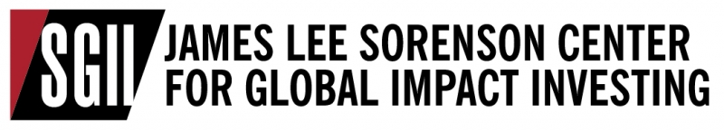

Resume
These are some of the companies and organizations I have worked with over the past few years. The list includes a few previous engagements as well as groups I still work with currently. Click for more information about what each one does and my roles with them:
For the past 2+ years I have had an ongoing role as a Senior Associate with the Sorenson Global Impact Investing Center. Founded in 2010 as the University Impact Fund, the SGII Center is one of the first student-driven impact investing and consulting firms in the world. We conduct value-add projects and investment research for leading impact investment funds, entrepreneurs, innovative non-profits, and PRI-interested foundations.
During my time with the SGII Center, I have had some incredible opportunities to work with social entpreneurs located all over the world—many from India, Africa, and Brazil. Specifically, my work has included in-depth analyses on sectors such as rural supply chains, healthcare, access to energy, mobile money, access to finance, recycling and many others. Some of my favorite companies (and definitely worth checking out) are Copia Global, Kinara Capital and Liberty & Justice .
Through my role at the center I was able to spend three months in Nairobi, Kenya working with social entreprenurs on behalf of one of our partners, Village Capital. I also had the chance to travel to Brown University last spring to speak about the role of social entreprenurship in higher education as part of the 2014 AshokaU Exchange. I was selected as one of 12 students from over 200 applicants in the Summer 2012 Intern class and since that time have worked with over 30 companies and funds on investment deals and value-add research.
I am currently working at KURU Footwear, a Utah-based footwear e-commerce company. I work as a web developer, and my duties include web design and development, A/B and multivariate testing, search engine optimization (SEO), email and online marketing strategy. I am also in charge of managing and coordinating with our outsourced software development firm, SEO consulting firm, and web design firm. Programming primarily with HTML, CSS, and Javascript.
I am currently involved in the digitial health space with a startup company called Alterniity. Alterniity is based on 13 years of research done at the ARTORG Research Center for Biomedical Engineering of the University of Bern. Our product is a non-pharmaceutical solution for patients suffering from cognitive decline, especially dementia and Alzheimer’s disease.
Right now I am wear many different hats: business strategy, financial analysis, product development, fundraising, marketing, programming etc. We recently won the Red Touch Media Incubator Award via the state-wide University Entrepreneur Challenge. Follow us on Twitter @alterniity or like us on Facebook for more info and updates.
Previously I served as the 2013-14 Editor of the Hinckley Journal of Politics. The journal is published annually by the Hinckley Institute of Politics as a collection of research papers from students, and local public officials.
As editor, my role was to be year-round director of the student journal board, which recruits student paper submissions from across campus and evaluates them for publication based on depth of research, analysis, effective writing, grammar, etc. I also performed technical editing and content organization of student papers and contributions from public officials. The scholarly papers published range among the fields of politics, economics, international relations, and humanitarian aid.
Check out our publication of the 2013-14 Hinckley Journal of Politics.
The University Venture Fund was founded in 2001 and is the largest student-run venture capital fund in the country with $18.2M under management. The fund has invested in 19 companies to date and has had 3 exits. Portfolio companies fall into a broad range of industries including technology, healthcare, and consumer products. In addition to investing in startup companies, UVF conducts value-add projects for its portfolio companies and other venture capital and private equity firms.
I was selected as one of 12 students from over 200 applicants in the Summer 2012 Intern class and have been directly involved with over 10 investment deals and value add projects, resulting in direct investments of over $200,000.
During Fall 2013 I worked as the Finance Associate for the VilCap/GrowthAfrica Innovation to Impact accelerator program in Nairobi, Kenya. I was responsible for individual consulting and financial modeling for each of the companies during the 12-week program. My work included operational modeling, financial forecasting, valuation, and assisting with capital structuring. I also organized networking events for the entrepreneurs as part of Village Capital's outreach during the program.
Village Capital builds cohorts of entrepreneurs and executes start-up accelerator programs with partners worldwide. At the end of each program, entrepreneurs assess one another, and the top-ranked receive capital from partner investors. To date Village Capital has launched 20 programs worldwide, supporting over 300 enterprises.
The GrowthHub by GrowthAfrica is a platform, space, and learning environment located in Nairobi, Kenya. It was designed to incubate and accelerate start-ups to deliver sustainable business growth, create employment, and contribute to social progress in East Africa. Their goal is to help entrepreneurs grow their ventures into strong commercial businesses, and facilitate capital investment into these businesses from abroad.
I am currently pursuing a BS Mathematics (Stats emphasis), BA Economics (Honors), BA in International Trade & Commerce, as well as minor degrees in Computer Science and Philosophy. I tentatively plan to graduate spring semester 2016.